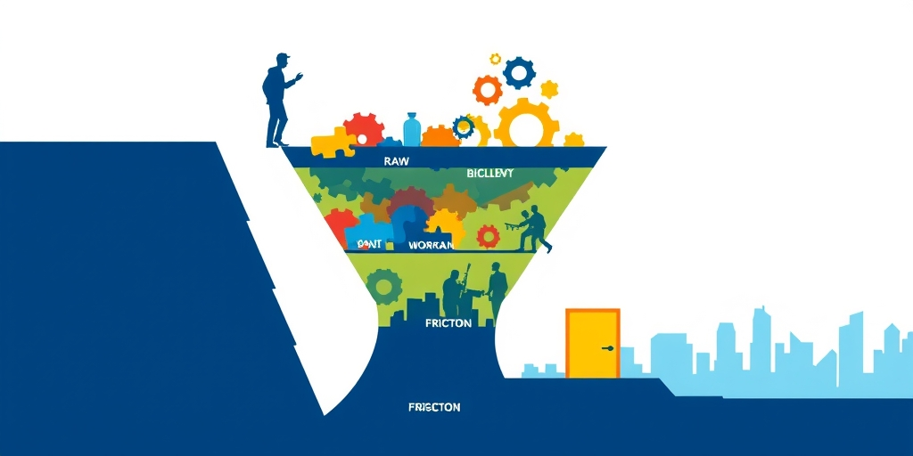

小汪老师的成长洞察 · 属于你的成长专栏
同一个工程师团队，2024年配备了AI编程助手，代码产出量是2014年的三倍。但交付给用户的产品，打开速度比十年前慢，广告比十年前多，真正有用的功能比十年前少。这个悖论怎么解释？答案不在工具本身，而在工具所服务的系统目标上。
消费者AI应用几乎不赚钱。用户对AI功能的付费意愿低得惊人，大量产品靠风投补贴维持运转。真正撑起AI公司估值的，是企业应用市场。
代码生成、文档处理、客服自动化、数据分析——这些才是买单的地方。OpenAI和Anthropic的主要营收来自API调用，而调用量的大头是企业用户。企业愿意付钱的逻辑很简单：一个AI编程助手让程序员产出翻倍，一套自动化流程替代几个人力，账面上ROI非常好看。
这不是消费者体验的提升。这是企业人力成本的压缩。AI这一轮商业化最真实的驱动力，就是把人的工资换成了token的费用。
过去十年，主流软件产品的用户价值交付能力整体下降。一个残酷的对比：同样的业务功能，2014年的app比2024年更快、更清爽、更省电。不是因为工程师变差了，而是软件产品的目标函数发生了根本性偏移。
从“高效完成用户任务”变成了“最大化用户停留时间和注意力消耗”。这个偏移催生了大量负价值功能：强制推送的通知，故意制造摩擦的退出流程，诱导点击的推荐算法，用来收集数据的隐性追踪，无处不在的广告位。这些功能消耗了大量工程资源，产生了巨大的代码复杂度。
用户被迫用更好的硬件，运行越来越臃肿的软件，做的还是十年前就能做的同样的事情。现在AI来了，它的第一个主要应用场景是：帮工程师更快地写这些负价值功能。AI把喂屎的效率提升了，但屎还是屎。

经济学里有个概念叫生产率悖论：IT投资大幅增加，但宏观层面的全要素生产率增长却迟滞甚至下降。这个悖论在1980年代个人电脑普及期出现过，现在正在AI时代重演。
原因在于效率存在多个层次。工具层效率——AI辅助编程，速度翻倍。流程层效率——代码写好了，但上线要过多层审批。组织层效率——功能上线了，但产品方向本身是错的。市场层效率——产品做出来了，但用户根本不需要。AI目前主要提升的是工具层效率，而真正的瓶颈在组织层和市场层。用AI快速构建的错误产品，只是更快地到达了被用户抛弃的终点。
更深层的摩擦来自信息不对称的加剧。当AI让内容生产速度提升十倍，市场噪声也以同样倍率增加。用户的判断力没有随之提升。真正有价值的信号在更嘈杂的环境里更难被识别，交易成本上升，社会整体的信息处理效率反而降低。
全球数据中心建设的投资规模，已经明显超出了可被现有需求支撑的水平。微软、谷歌、亚马逊、Meta宣布的投资计划，加总起来是数千亿美元级别。驱动这些投资的逻辑是：AI需求会持续爆炸式增长，抢占算力就是抢占未来。
但这套逻辑有两个脆弱点。第一个是需求侧的不确定性。企业AI应用的ROI目前主要停留在节省人力成本这一层，而节省人力成本有下限。裁员到一定程度，剩余岗位的AI替代边际效益递减。真正能驱动持续token消耗的杀手级企业应用，还没有出现。
第二个是安全风险触发集体刹车的可能。AI Agent在企业环境中的大规模部署存在结构性隐患：提示注入攻击、权限滥用、自动化决策的不可解释性。已经有企业在内部AI系统中遭遇了严重的数据泄露。一旦出现足够严重的公开安全事故，企业对AI应用的扩张将集体踩刹车。数据中心建设的资本周期是五到十年，企业采购周期是一到三年，安全事故的发生随机但概率上升。三个时间轴的错配，构成了典型的投资泡沫结构。
技术真实有效，资本过度涌入，基础设施建设超前，应用落地速度慢于预期，泡沫破裂，真正有价值的部分在废墟上重建。这个周期结构在铁路时代上演过，大量铁路公司破产，但铁路本身留了下来，重塑了经济地理。在互联网泡沫时代上演过，dot-com公司归零，但光纤网络和电商基础设施留下，成为后来十年增长的基础。
AI这一轮，算力基础设施的过度建设很可能重演。但有一样东西和以往不同。之前的泡沫破裂后，留下的基础设施至少能服务于正向需求。铁路能运货，光纤能传数据。但AI加速的是系统的执行效率，如果系统本身的目标函数是错的，即使泡沫破裂后留下的基础设施，也会继续被用来加速错误方向的执行。
负优化问题不解决，这一轮的残余价值比历史上任何一次技术泡沫都更难被释放。技术本身是中性的，但它所服务的目标函数，决定了它最终创造的是社会价值还是社会消耗。
写给你的话
一个社会的技术进步，最终要以什么为衡量标准？如果标准是企业的token消耗量，那我们正在赢。如果标准是普通人完成日常任务的难度是否降低，那我们正在输。这两个标准之间的裂缝，才是这场AI热潮最值得被严肃讨论的地方。你不需要反对AI，但你需要问一问：它被用来加速的，到底是什么方向上的速度。
小汪老师的成长洞察 · 属于你的成长专栏